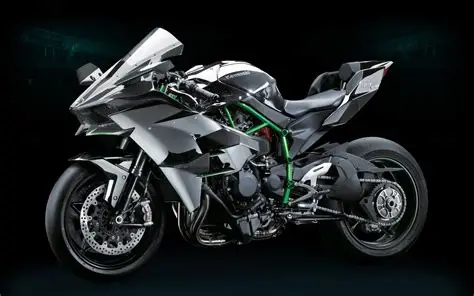
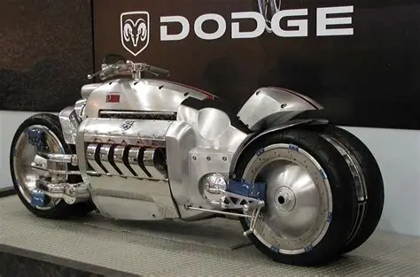
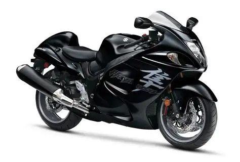
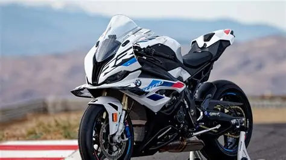
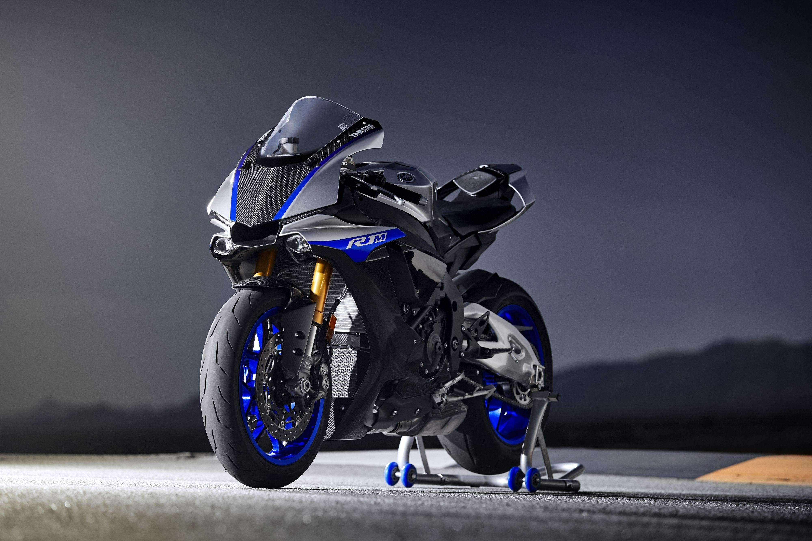

Introducción
Las motocicletas deportivas representan el máximo nivel de rendimiento dentro de la industria. Estas máquinas son diseñadas para alcanzar velocidades extraordinarias gracias a motores potentes, diseños aerodinámicos y sistemas electrónicos avanzados.
A continuación conoceremos algunas de las motocicletas más rápidas y famosas del planeta.
Kawasaki Ninja H2R

La Kawasaki Ninja H2R es considerada una de las motocicletas más rápidas jamás fabricadas. Está equipada con un motor sobrealimentado que genera una potencia impresionante.
Fue desarrollada para circuito cerrado y utiliza materiales de alta calidad como fibra de carbono para mejorar la aerodinámica y reducir el peso.
Ficha Técnica
| Características | Datos |
|---|---|
| Motor | 998 cc |
| Potencia | 310 HP |
| Velocidad Máxima | 400 km/h aprox. |
| Peso | 216 kg |
Ventajas
- Potencia extrema.
- Tecnología avanzada.
- Excelente aceleración.
- Diseño futurista.
Dodge Tomahawk

La Dodge Tomahawk es una motocicleta conceptual que se hizo famosa por su motor V10 proveniente del Dodge Viper.
Su diseño es único debido a que utiliza cuatro ruedas muy cercanas entre sí y una apariencia futurista.
Ficha Técnica
| Características | Datos |
|---|---|
| Motor | V10 8.3 litros |
| Potencia | 500 HP |
| Velocidad Estimada | 500 km/h |
| Peso | 680 kg |
Curiosidad
La Tomahawk es considerada una de las motocicletas más extravagantes jamás creadas.
Suzuki Hayabusa

La Suzuki Hayabusa dominó durante años el mercado de las motos de alta velocidad. Su nombre proviene de un ave japonesa capaz de alcanzar grandes velocidades.
Combina potencia, estabilidad y comodidad, siendo ideal tanto para velocidad como para viajes largos.
Ficha Técnica
| Características | Datos |
|---|---|
| Motor | 1340 cc |
| Potencia | 190 HP |
| Velocidad Máxima | 312 km/h |
| Peso | 264 kg |
BMW S1000RR

La BMW S1000RR es una superbike alemana diseñada para ofrecer un equilibrio perfecto entre potencia, tecnología y seguridad.
Cuenta con sistemas electrónicos avanzados como ABS deportivo, control de tracción y modos de conducción.
Ficha Técnica
| Características | Datos |
|---|---|
| Motor | 999 cc |
| Potencia | 210 HP |
| Velocidad Máxima | 303 km/h |
| Peso | 197 kg |
Yamaha R1M

La Yamaha R1M está inspirada directamente en las motocicletas utilizadas en MotoGP. Su diseño agresivo y tecnología avanzada la convierten en una de las superbikes más deseadas del mundo.
Incorpora suspensión electrónica, modos de conducción y sistemas de control muy sofisticados.
Ficha Técnica
| Características | Datos |
|---|---|
| Motor | 998 cc |
| Potencia | 200 HP |
| Velocidad Máxima | 299 km/h |
| Peso | 202 kg |
Tabla Comparativa
| Modelo | Potencia | Velocidad Máxima |
|---|---|---|
| Kawasaki Ninja H2R | 310 HP | 400 km/h |
| Dodge Tomahawk | 500 HP | 500 km/h |
| Suzuki Hayabusa | 190 HP | 312 km/h |
| BMW S1000RR | 210 HP | 303 km/h |
| Yamaha R1M | 200 HP | 299 km/h |